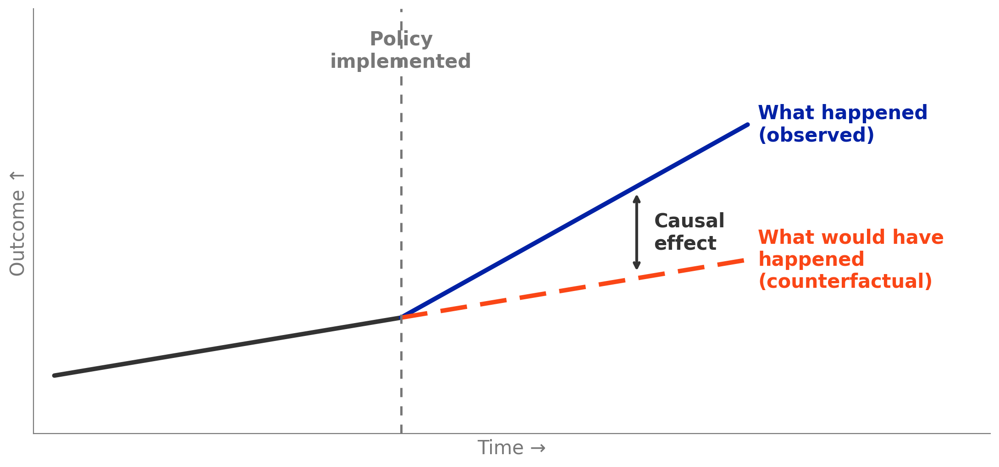

EDA6931 | Quantitative Methods in Educational Administration
Before We Begin
PlayPosit Question
A news headline says: “Students in districts that spend more per pupil score higher on state tests.”
Based on what you’ve learned so far in this course, what questions would you ask before accepting this claim?
Respond in 2–3 sentences.
Where We Are
Today we step back from producing analysis to learn how to evaluate it.
Last module
Correlation & Bivariate Regression
One predictor, one outcome Correlation ≠ causation
Module 8
Today
Reading Evidence
Selection bias Types of evidence Critical reading toolkit
Module 9
Coming up
Multivariate Regression
Controlling for other factors Back in Stata
Module 10
You’ve been building tools. Now you learn to evaluate what others built with theirs.
This week is the concept: selection bias, and what “controlling for” other variables can and cannot fix. Next week, in the course’s last hands-on Stata module, you’ll run regressions that control for variables yourself.
Part 1
Selection Bias
Remember These Warnings?
Module 7: t-Tests
“t-tests don’t explain why groups differ. Our full-day vs. half-day result is significant, but it doesn’t tell us whether kindergarten schedule causes the difference.”
Module 8: Regression
“Ice cream sales and drowning rates are correlated — but ice cream doesn’t cause drowning. Higher SES predicts reading scores — but giving families money might not raise scores.”
Still ahead
Module 10: Statistical Control
“Statistical control only works for things you can measure. It does not solve problems caused by things you can’t measure.”
They All Point to the Same Problem
Selection Bias
The name for the problem.
Selection bias occurs when the people who receive a treatment, program, or experience are systematically different from those who don’t — in ways that also affect the outcome.
Every time we said “this doesn’t prove causation,” we were pointing to this problem.
The issue: whenever we compare two groups, the groups weren’t formed randomly. People selected into those groups — or were selected by circumstances — and that selection process is almost always correlated with the outcome we care about.
Who Gets the Treatment?
Regression handles this
What we can see & control for
District poverty rate
Enrollment size
Percent minority
Urbanicity · State
waterline
Regression cannot touch this
What we cannot see
Quality of district leadership
Community support for schools
How the money is actually spent
Parent engagement & expectations · Political will behind the funding
Observable vs. Unobservable
What controls can and cannot do.
What We Can See & Control For
• District poverty rate • Enrollment size • Percent minority • Urbanicity • State
Regression can handle this.
What We Cannot See
• Quality of district leadership • Community support for schools • How the money is actually spent • Parent engagement • Political will behind the funding
Regression cannot touch this.
If higher-spending districts also have better leadership and more community support, the spending–achievement correlation picks up all of those things — not just money.
A School Finance Example
Does money matter in education?
The Simple Comparison
Higher-spending districts have higher test scores.
This is descriptive. It tells us what’s happening.
The Problem
But higher-spending districts also have wealthier families, more resources, better infrastructure…
Is it the spending, or everything that comes with it?
This is one of the most debated questions in education policy. For decades, researchers argued about whether school funding actually improves student outcomes — or whether the correlation is entirely driven by other factors. The answer depends on what kind of evidence you look at.
Spotting Selection Bias
PlayPosit Question 1
A state implements a new teacher mentoring program. Districts were invited to apply, and 30 districts volunteered. A researcher compares test scores in participating vs. non-participating districts and finds participating districts have higher scores. A colleague argues this comparison may be biased. What is the most likely source of bias?
The sample size is too small
Districts that volunteered may already have stronger leadership and more resources
Test scores are not a valid measure of teacher quality
The mentoring program has not been running long enough
Part 2
How Researchers Address Selection Bias
What Do Researchers Do About It?
Two strategies for making causal claims.
1
Randomize. Assign people to groups at random, so the groups are comparable by design.
2
Find a natural experiment. Exploit a situation where something like randomization happened by accident.
Both strategies try to solve the selection problem — but in different ways.
Random Assignment (RCTs)
Education example: The Tennessee STAR experiment randomly assigned students to small vs. regular classes. RCTs are powerful but not always possible or ethical. We can’t randomly assign school funding or family income.
When Randomization Isn’t Possible
Most important education questions can’t be answered with an experiment.
We can’t randomly assign children to poverty or affluence.
We can’t randomly assign school funding — courts and legislatures decide that.
We can’t randomly assign students to “good” or “bad” teachers for a study.
This is why most education research is observational, not experimental. But that doesn’t mean we’re stuck with simple correlations.
Quasi-Experimental Designs
When nature or policy creates something close to an experiment.
Policy changes
A state raises the dropout age from 16 to 18. Compare students just above and below the old cutoff.
Court orders
Courts order some states to increase school funding. Compare affected districts before and after, relative to unaffected districts.
Lotteries
An oversubscribed magnet school admits students by lottery. Compare lottery winners to lottery losers.
None of these are experiments. But each exploits a situation where the “treatment” was assigned for reasons unrelated to the outcome.
The Counterfactual: “Compared to What?”

Every causal claim requires a counterfactual: what would have happened without the intervention? The quality of a causal claim depends on the quality of the counterfactual.
Matching Designs to Scenarios
PlayPosit Question 2
A researcher wants to know whether a new math curriculum improves test scores. She compares scores in 10 schools that adopted the curriculum to 10 schools that did not. The adopting schools had applied for a grant and were selected based on the strength of their applications. What type of evidence does this study provide?
Experimental — the researcher controlled who received the curriculum
Quasi-experimental — the grant process created a natural comparison
Correlational — the groups were not randomly assigned, and selection into adoption likely differs systematically
Descriptive — no statistical analysis was performed
Part 3
The Evidence Hierarchy
Types of Evidence
Not all evidence is created equal — but “higher” doesn’t always mean “better.”
The question is not “which level is best?” but “does the evidence match the claim being made?”
The Four Levels
Experimental (RCT)“What’s the causal effect?” Random assignment eliminates selection bias
Quasi-Experimental“What’s the likely effect?” A design feature addresses selection bias
Correlational“What goes together?” Controls for observables; unobservables remain
Descriptive“What’s happening?” Documents patterns; no attempt to address selection
↑
Stronger protection against selection bias
Where Does Our Course Work Fit?
Descriptive
Modules 2–4: histograms, means, comparisons, bar graphs
Correlational
Module 8 — and Module 10, coming up: regression, controlling for, R²
Quasi-Experimental
This is what researchers do — you’ve learned to read it, not produce it
Experimental
Rare and expensive, but the strongest causal evidence
Your capstone is descriptive — and that’s exactly right. But when you read others’ research, you need to know what kind of evidence they have and what claims it supports.
School Finance Across the Hierarchy
The same question, answered with different evidence.
Level
Claim
Method
Descriptive
Districts that spend more have higher test scores
Summary statistics, crosstabs
Correlational
$1,000 more per pupil → 2-pt higher scores, controlling for poverty
Regression with statistical controls
Quasi-Exp.
After court-ordered funding increases, affected districts saw gains vs. unaffected
Jackson et al. (2016): court-ordered finance reforms
Experimental
Very rare — can’t randomly assign school funding
—
Identifying Evidence Types
PlayPosit Question 3
A research brief reports: “After controlling for student demographics and prior test scores, students in schools that adopted the new literacy program scored 3 points higher on the state reading assessment than students in schools that did not adopt it.” What type of evidence is this?
Descriptive
Correlational — the study uses statistical controls, but schools self-selected into adoption
Quasi-experimental — the study controls for prior scores, which addresses selection bias
Experimental — the study compares two groups
Part 4
The Critical Reading Toolkit
Your Critical Reading Toolkit
Six questions to ask of any quantitative study.
The Six Questions
1
What’s the question? Is the study asking a descriptive question or a causal one?
2
What’s the comparison? Who or what is being compared? Is there a clear comparison group?
3
How were groups formed? Randomly assigned, or self-selected? The most important question.
4
What’s controlled for? What variables are accounted for? What might be missing?
5
How big is the effect? Practically meaningful, not just statistically significant?
6
Does the conclusion match? Is the author making causal claims from correlational data?
Applying the Checklist
Demo: Jackson, Johnson & Persico (2016)
The study: Jackson et al. found that a 10% increase in per-pupil spending throughout a student’s school years led to 0.31 more years of completed education and 7% higher adult wages. The authors studied court-ordered school finance reforms that increased funding in lower-spending districts.
1. Question:Causal — effect of spending on outcomes
2. Comparison:Affected vs. unaffected districts
3. Groups formed:Court orders (external to choice) — quasi-experimental
4. Controls:Demographics, district characteristics, pre-reform trends
5. Effect size:7% higher wages — substantial
6. Match?Causal language (“led to”) — warranted by design
The causal language is justified here because the design addresses selection bias. If this were a simple regression comparing high- and low-spending districts, the same language would not be justified.
Applying the Checklist to a Passage
PlayPosit Question 4
A superintendent presents data showing that districts that adopted full-day pre-K have kindergarten readiness scores 8 points higher than districts without full-day pre-K, even after controlling for median household income and district size. Which statement best evaluates this evidence?
This is strong causal evidence because it controls for income and district size
This is descriptive evidence because it only compares two groups
This is correlational evidence — districts self-selected into full-day pre-K, so selection bias likely remains even after controls
This is quasi-experimental evidence because there is a comparison group
Part 5
Capstone Connection
Your Capstone Memo
Section A: Topic & Research Question
One paragraph. State your question, say why it matters, and what you expect to find.
Section B: Critical Review
Evaluate one academic quantitative empirical paper using the six-question framework.
This week’s assignment is Capstone Draft 3. Find one empirical paper on your capstone topic and write a critical review using the six questions. This draft becomes Section B of your final memo.
Peer-reviewed journals: • AERJ, EEPA, Educational Researcher, JPAM Available through the UF library
Research Syntheses — optional background
• EdResearch for Action • AEFP EdPolicy Handbook • Brookings Brown Center • Learning Policy Institute • Future of Children
Your memo’s Section A is your topic and research question — no synthesis source is required. Synthesis organizations are useful background for understanding your topic’s research landscape.
Reflection: Your Topic
PlayPosit Question 5
Think about your capstone topic. What is one causal claim you have seen or heard about your topic (e.g., “X improves Y” or “X reduces Y”)?
Based on what you learned today, what question would you want to ask about the evidence behind that claim?
Respond in 2–3 sentences.
Looking Ahead
Readings: Gordon & Conaway Ch. 2–4, plus Hanushek (2015) and Jackson et al. (2015) in Education Next — read the pair together and ask what kind of evidence each author relies on.
Capstone Draft 3: a 500–750 word critical review of one empirical paper on your capstone topic, using the six-question framework. Due date on Canvas.
Next module: back in Stata — multivariate regression, controlling for other factors.